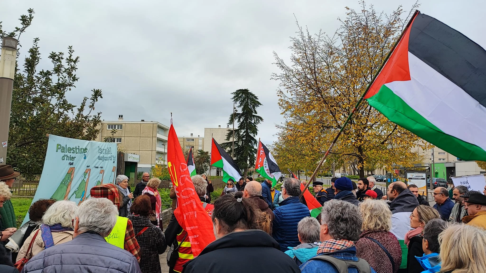
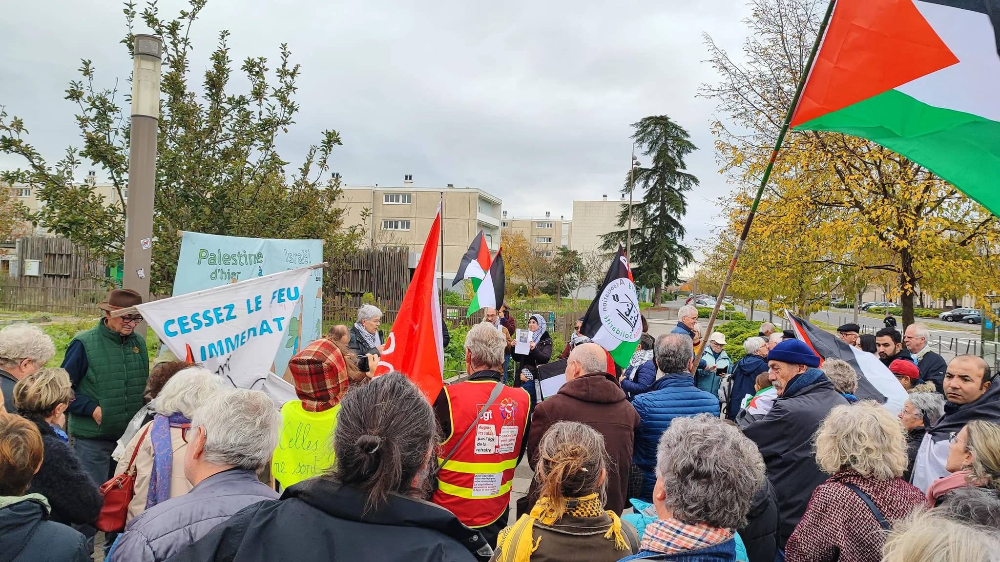
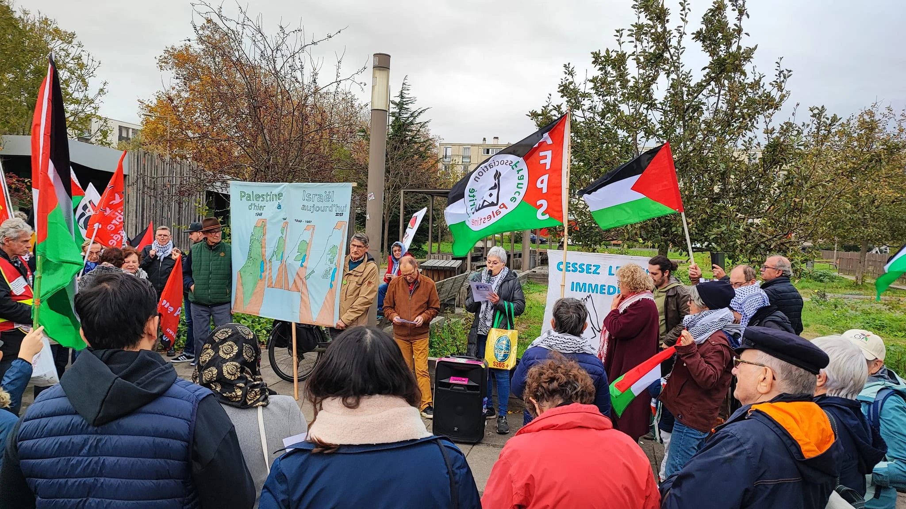
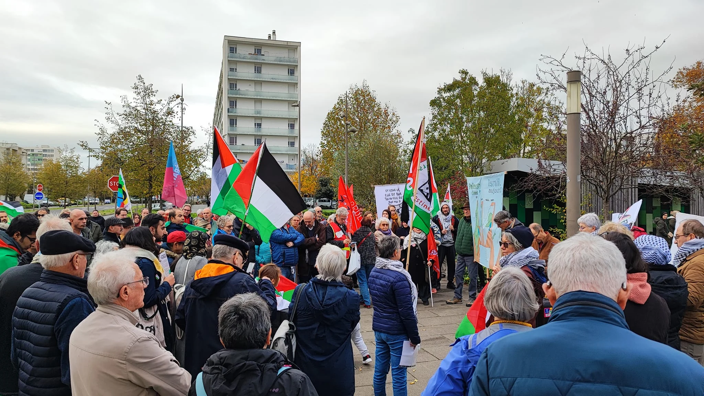
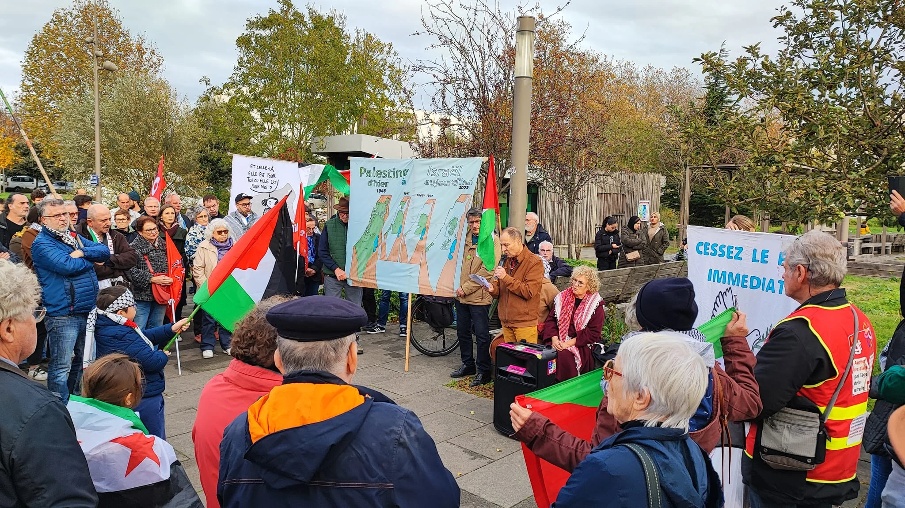
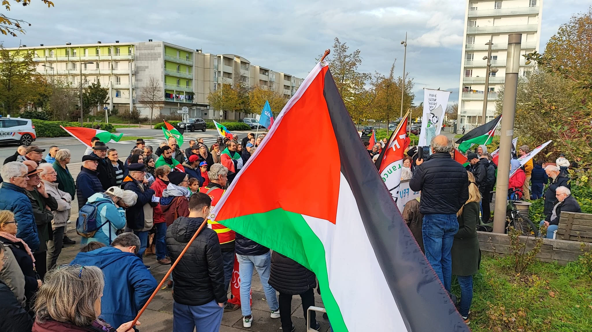

Compte rendu fédéral
À Niort, le rassemblement du 18 novembre pour le cessez-le-feu
Date indiquée par Facebook · 18 novembre 2023
Repères éditoriaux
Nous nous sommes rassemblés à Niort pour demander un cessez-le-feu immédiat et une paix juste. Les sept photographies accompagnent notre compte rendu.
Texte conservé avec la publication
Halte au massacre à Gaza et en Cisjordanie
Rassemblement à Niort pour dire :
Cessez le feu immédiat !
Libération de la Palestine de la colonisation et de l'occupation.
Paix et Justice.






Sources
Archive rouge · export Facebook · AR-0002-FB-01538
À lire aussi · À Niort, nouvel appel au cessez-le-feu pour le 18 novembre